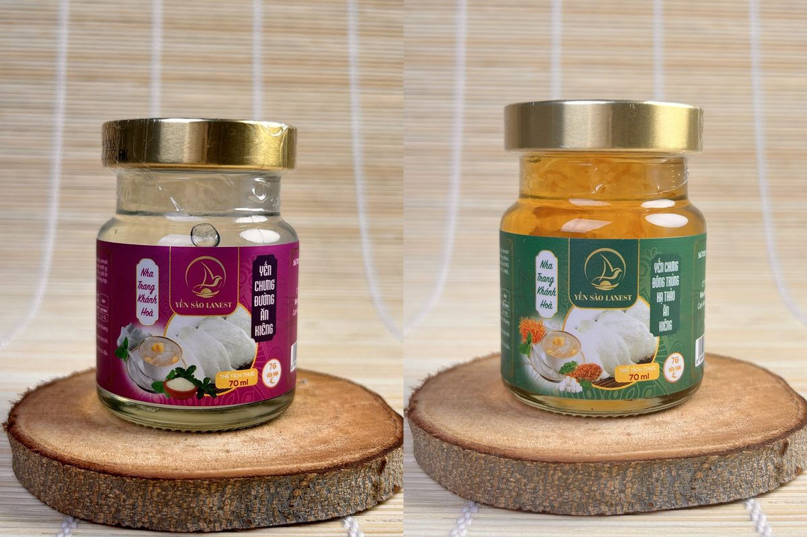
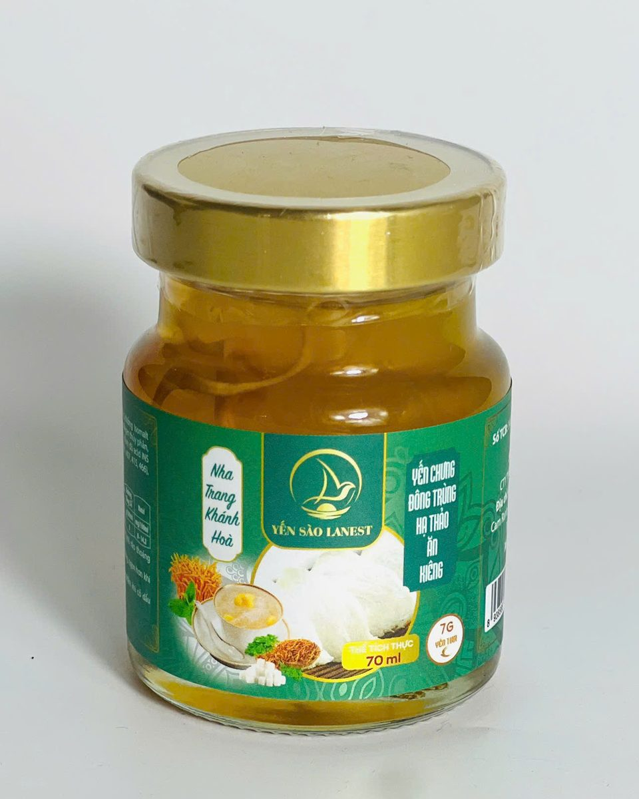

Yến Chưng Đường Ăn Kiêng: Isomalt Là Gì, Hợp Với Ai, Lưu Ý Gì
Yến Sào Lanest · Đăng ngày 14/11/2026

Khách gọi hỏi yến chưng đường ăn kiêng thường hỏi luôn ba câu: "không đường thật à", "ngọt bằng gì", "ai uống được". Trả lời ngắn: hũ này không dùng đường phèn mà dùng đường isomalt, và nó dành cho người muốn hạn chế đường chứ không phải "uống bao nhiêu cũng được". Bài này đi vào chính cái hũ: trong hũ có gì, vị ra sao, hợp với ai, khác vị đông trùng ăn kiêng ở đâu và những lưu ý Lanest muốn khách biết trước khi mua.
Hai vị ăn kiêng của dòng yến hũ 7g: đường ăn kiêng (nhãn tím hồng) và đông trùng hạ thảo ăn kiêng (nhãn xanh)
1. Yến chưng đường ăn kiêng khác vị đường phèn ở đâu?
Cả hai cùng dòng yến hũ 7g yến tươi, hũ thủy tinh 70ml. Chỗ khác nằm ở chất tạo ngọt:
| Vị | Chất tạo ngọt | Nguyên liệu thêm |
| Yến chưng đường phèn | Đường phèn 8g | Không |
| Yến chưng đường ăn kiêng | Đường isomalt 2,4g | Không |
| Yến chưng đông trùng hạ thảo ăn kiêng | Đường isomalt 2,4g | Đông trùng hạ thảo 1,9g |
Thành phần hũ đường ăn kiêng theo danh sách sản phẩm đăng ký của Lanest: nước, yến tươi 7g, đường isomalt 2,4g, collagen thủy phân, chất xơ inulin, chất điều chỉnh độ acid INS 327, 331(iii), chất ổn định INS 401, 407, 415, 466 và hương yến tổng hợp. Số tự công bố 20/CÔNG TY TNHH YẾN SÀO LANEST/2025. Vì có phụ gia ghi rõ trên nhãn, Lanest không gọi dòng này là "100% yến". Cách đọc từng dòng có trong bài cách đọc nhãn yến hũ.
2. Isomalt là gì, có phải "không đường"?
Trên nhãn, isomalt được ghi là "đường Isomalt", và tài liệu sản phẩm của Lanest gọi nó là đường ăn kiêng. Nó thay chỗ của đường phèn để hũ yến vẫn có vị ngọt.
Điều cần hiểu đúng: "ăn kiêng" ở đây nghĩa là hạn chế đường, không có nghĩa hũ yến không có năng lượng hay ăn thoải mái được. Hũ vẫn có yến, có collagen, có chất xơ và chất tạo ngọt. Số liệu kiểm nghiệm dinh dưỡng của hai vị ăn kiêng, đặt cạnh các vị dùng đường phèn, có trong bài yến sào cho người tiểu đường.
3. Vị ra sao và hỗ trợ gì?
Tài liệu giới thiệu sản phẩm tả yến chưng đường ăn kiêng có vị ngọt thanh, nhẹ dịu, vẫn giữ hương vị đặc trưng của yến chưng truyền thống. Người quen hũ đường phèn sẽ thấy ngọt nhẹ hơn một chút.
Bản mô tả từng vị của Lanest ghi yến chưng đường ăn kiêng:
- Hỗ trợ bổ sung dưỡng chất, duy trì thể trạng ổn định.
- Hỗ trợ tăng cường sức đề kháng.
- Hỗ trợ hấp thu và chuyển hóa dinh dưỡng.
- Phù hợp cho người ăn kiêng, hạn chế đường.
Sản phẩm này không phải là thuốc và không có tác dụng thay thế thuốc chữa bệnh. Lanest không khẳng định hũ yến giúp hạ đường huyết hay điều trị bệnh nào.
4. Hợp với ai, ai cần hỏi bác sĩ trước?
Theo tài liệu sản phẩm, hai vị ăn kiêng dành cho người ăn kiêng, người muốn hạn chế đường và người lớn tuổi. Đây cũng là vị hợp để con cháu chọn khi mua yến biếu ông bà, bố mẹ đang phải kiêng ngọt.
- Người đang điều trị tiểu đường hoặc bệnh chuyển hóa: bắt buộc hỏi bác sĩ điều trị trước khi dùng thường xuyên. Mang theo hũ hoặc chụp nhãn thành phần để bác sĩ xem. Không bỏ thuốc, không giảm liều vì đang uống yến.
- Người lớn tuổi có bệnh nền: cũng nên hỏi bác sĩ, bắt đầu ít và đều. Xem thêm bài yến sào cho người cao tuổi.
- Người đang giữ dáng, ăn kiêng không có bệnh: có thể chọn vị này thay vị đường phèn. Bài yến sào giảm cân, đẹp da nói rõ hơn chuyện đường đi kèm trong chén yến.
Với trẻ nhỏ, Lanest có hai vị riêng cho trẻ em, ghi rõ "từ 1 tuổi trở lên". Hai vị ăn kiêng không được xếp cho trẻ em.

Hũ yến chưng đông trùng hạ thảo ăn kiêng: nước vàng nhờ đông trùng, ngọt bằng isomalt
5. Đường ăn kiêng hay đông trùng ăn kiêng?
Hai vị cùng dùng 2,4g isomalt mỗi hũ. Vị đông trùng ăn kiêng có thêm 1,9g đông trùng hạ thảo, nên nước yến ngả vàng như trong ảnh. Bản mô tả của Lanest ghi vị này hỗ trợ bồi bổ cơ thể, nâng cao thể trạng; bổ sung dinh dưỡng cho người ăn kiêng; tăng sức đề kháng và phục hồi cơ thể; duy trì làn da và trạng thái cân bằng cơ thể.
- Thích vị yến nguyên bản, nhẹ nhàng: chọn yến chưng đường ăn kiêng.
- Thích vị đông trùng, hoặc mua biếu người đã quen hũ đông trùng mà nay phải kiêng đường: chọn đông trùng ăn kiêng. Đọc thêm về nguyên liệu này trong bài yến chưng đông trùng hạ thảo.
6. Dùng thế nào để đúng chữ "ăn kiêng"
- Lắc nhẹ trước khi uống; nhãn ghi hũ ngon hơn khi uống lạnh. Muốn uống ấm thì chưng cách thủy, không đun sôi trực tiếp.
- Không nêm thêm đường, không uống kèm bánh kẹo ngọt. Đã chọn vị ăn kiêng mà thêm ngọt bên ngoài thì mất ý nghĩa.
- Ít và đều. Người trưởng thành khoảng 2–3 lần mỗi tuần; người có bệnh nền dùng theo lượng bác sĩ cho phép. Không uống liền nhiều hũ một lúc, không uống ngay sau bữa chính.
- Chưa mở nắp để nơi khô ráo, thoáng mát ở nhiệt độ thường; đã mở nắp thì cất lạnh và dùng sớm.
Câu hỏi thường gặp
Yến chưng đường ăn kiêng ngọt bằng gì?
Bằng đường isomalt, 2,4g mỗi hũ, thay cho đường phèn. Hũ không có đường phèn trong thành phần.
Người tiểu đường uống được không?
Cần hỏi bác sĩ đang điều trị trước. Nếu bác sĩ đồng ý, dùng ít, đều và theo lượng được cho phép. Yến không thay thế thuốc điều trị.
Hai vị ăn kiêng có collagen không?
Hũ đường ăn kiêng ghi có collagen thủy phân trong thành phần, như các vị 7g dành cho người lớn. Anh chị xem nhãn từng hũ để chắc chắn trước khi mua.